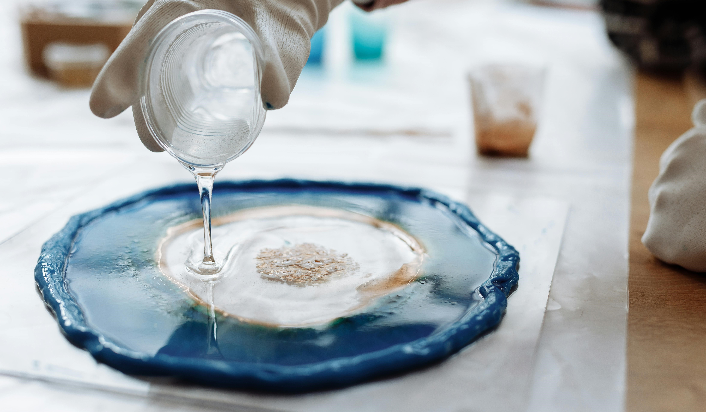

Product
Product
Product
Product
Product
FAQs
Contact
Frequently Asked Questions: Your Resource Center
Explore our comprehensive collection of frequently asked questions (FAQs) to quickly find answers to common inquiries about our products, services, and more.

FAQs
Why is the cured resin surface uneven?
An uneven cured resin surface can result from using warped or porous materials, improper leveling, or applying heat too close to the surface・ Applying a new coat can help correct these defects.
How long until epoxy turns yellow?
Epoxy resin can start to turn yellow within a few months to a year when exposed to UV light, though high-quality resins with UV Inhibitors may resist yellowing for several years・
Why does shrinking glue occur?
Immediately scrape resin-mold contact areas after pouring to prevent uneven shrinkage
Why does the ripple phenomenon occur?
Ensure each layer dries properly before applying the next to prevent ripples caused by temperature variations or premature pouring
What is epoxy resin?
Epoxy resin is a two-component polymer consisting of a base and a hardener. When mixed, it undergoes a chemical reaction that hardens the material into a durable, solid form.
Why is the epoxy resin hot after mixing?
The epoxy resin gets hot after mixing due to an exothermic chemical reaction between the resin and hardener, which releases heat as the mixture cures・
How long does it take for epoxy resin to solidify?
Epoxy resin typically solidifies between 24 hours and 7 days after application・
Can solid epoxy resin be cut or drilled?
Solid epoxy resin can be processed using cutting tools, similar to hard plastic・
Other considerations:
1. Avoid curing in very low temperatures to prevent extended curing times.
2. Limit resin color essence to 5% of the volume to maintain proper curing ・
3. Small molds may decrease curing time.
Contact Us
No Answers To Your Questions?
Contact Us Now!